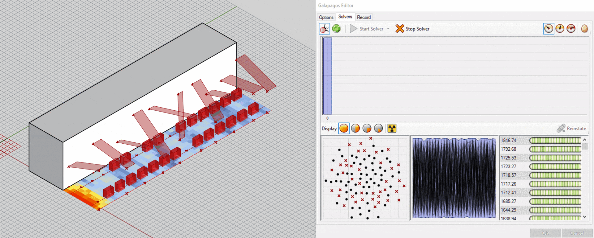
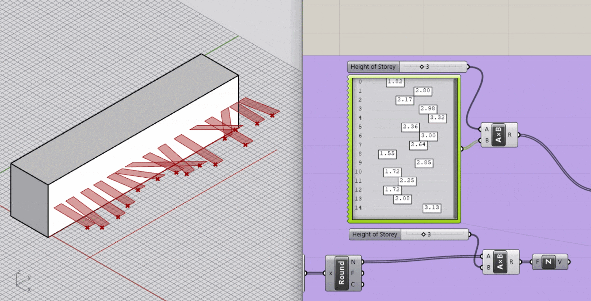
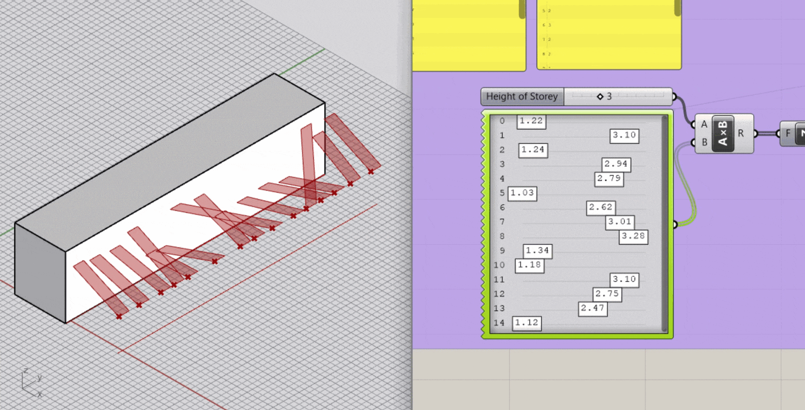
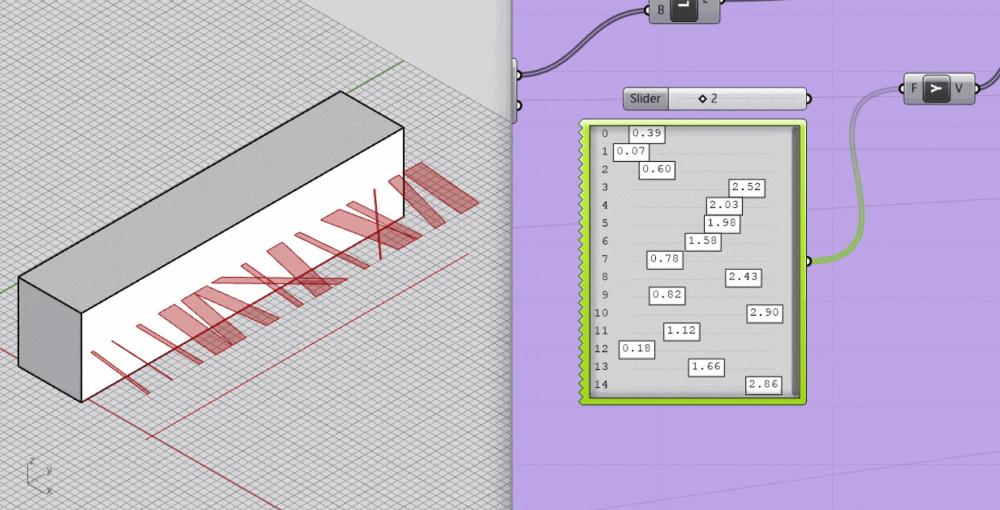

| 2402 | Urban Canopies | Analysis |
This project explores laneways, alleys, and other underutilized throughways. In addition to being an underutilized public asset, these spaces take up a significant amount of space within cities. Using the market typology, the intervention proposed for this project combines the use of market stalls and decorative canopies as a means to reactivate these spaces providing users with a more comfortable and aesthetically pleasing environment. Thus, a Grasshopper script is constructed to respond to varying site specific conditions considering the width and height of the laneway as well as the amount of solar radiation received in the summer.
Collaborator: Mahara Falif
Course: Urban Analysis and Simulation
Course Instructor: Cameron Parkin, University of Waterloo

Case Study Location #1: Abbey Lane

Case Study Location #2: David Pecuat Square

Case Study Location #3: Market Street

GIFs depicting the iterative processing of Galapagos. The program adjusts the placement of the anchor points as well as the width of the canopies to maximize: the # of shade points for adequately shaded market stalls, as well as the amount of solar radiation.

Anchor Point A

Anchor Point B

Canopy Width